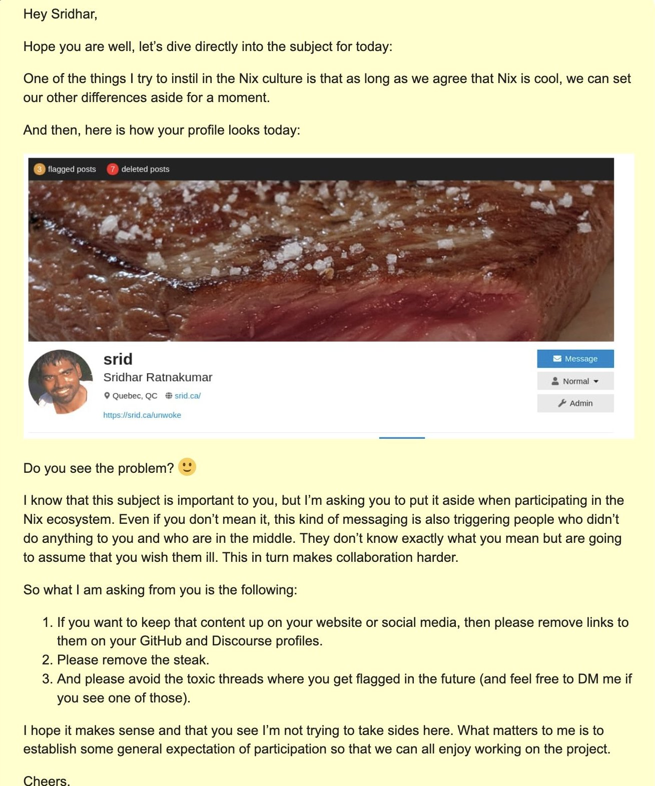
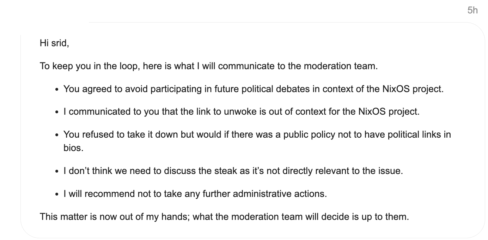
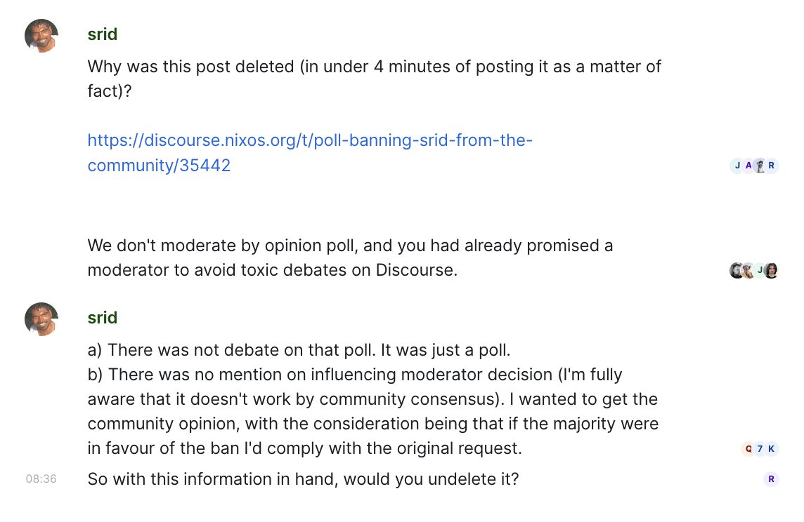

On Nov 14th, 2023 - the NixOS moderation team permanently banned me from Discourse, Github and Matrix for ideological reasons thus violating the very Code of Conduct they recently proposed. A week earlier, on Nov 7th, 2023, they had issued their threat demanding that I (1) take down the link to my unwoke page on my own Discourse profile, (2) remove a picture of a piece of steak that I had cooked, and (3) cease participating in the so-called ‘toxic threads’ (this latter request I readily agreed to). I sensibly counter-proposed that I’d take the link down only if they institute a public policy of there being no politically-oriented links in Discourse profile pages, which they refused leading to the only possible conclusion that the ban was motivated by wrongthink.
As the events unfolded, it became clear that over the years the core team has deliberately instituted a woke echo-chamber of moderators.
For events that happened after publishing this blog post, consult this X thread. For further events, and context, see NixOS Woke Invasion.
Timeline of events
For those interested in the facts of the matter, here’s what happened. The original mod threat was made on Nov 7, the ban was wielded on Nov 14. We start with the event that happened on September 27th/28th to provide an important context to the whole incident.
Sep 19
- Srid states his opinion on the gender survey question under a topic titled “Nix Community Survey 2023 Results”. This response, a week later (see next point below), gets moved to a separate thread and gets unlisted (meaning, nobody can reach it without a direct link) by a moderator.
Sep 27 - Sep 28
-
Christina Sørensen “cafkafk” arrives to the thread, 8 days later, and responds to Srid’s comment by providing a link to a (dubious) study on ‘gender bias’ in Github PRs
-
Srid disputes the validity of the study, and contextually criticizes the DE&I industry
- While not stated in that thread, bear in mind that the methodology and the conclusions of this particular study have already been disputed by the likes of Scott Alexander as well as Meredith Patterson, 1 who has written to the authors questioning their promoted conclusions.
-
Without any prompting on Srid’s part, an upset user Teo Camarasu “TeofilC” digs out srid’s unwoke link in his Discourse profile and publicly expresses intolerance (ie., derails the thread)
-
Christina Sørensen “cafkafk” derails the conversation further violating the then-upcoming CoC, by writing to Srid “I also wanna note that a particularly view 2 you have makes me no longer interested in engaging with you” while painting Srid (and more than half the general population where these “particular views”, as espoused by The Economist article for instance, are not uncommon 3 ) as an extremist, via citing an EU Government propaganda document that categorizes such people as “religious and far-right actors”.
-
Christina Sørensen “cafkafk” has also veered on engaging in personal attacks, such as writing to Srid, “you must have quite the victim mentality given your inability to understand scientific studies”.
-
Incidentally, about a week later, Christina Sørensen “cafkafk” wrote about wanting to exile a member of the mod team (whom I can only presume to be moderator Z; see below). In their words, “after having had very bad interactions with member of the moderation team, where they unequivocally treated me against the terms laid out in this code of conduct, and without any sort of transparency as what happened to the member that did treat me this way, I also have concerns.”
- It is left as an exercise to the reader as to wonder how such a member, who is given free license to violate the code of conduct, has the power to expel a moderator.
-
-
A moderator, henceforth named Z, asks Srid in private to stop engaging in that thread. Srid stops engaging further on this thread, vowing (to himself) never to engage on similar threads, after realizing (in hindsight) that it has not at all been productive.
- Srid also informed the moderator about the unfair application of flagging and moderation-warnings.
-
(Some comments in this thread then gets deleted by the mods later on, but it is unclear when exactly)
Nov 7
- A “Code of conduct” gets announced without any community input; some discussion ensued.
-
On the same day, Moderator Z sends Srid a private message requesting that he comply with three things:

Nov 9
-
Srid becomes aware of the message only 2 days later
-
Srid replies, agrees to (3) but questions the sensibility of (1) & (2) while suggesting that they institute an explicit public policy of such nature in Discourse, in order for him to remove the link/steak (lest it’d be politically-motivated selective expelling).
-
Moderator Z responds by accusing Srid that he intended to “rub [the steak & the link] on their faces” (“their” = people who complained), and equated the presence of the steak and the link to “swearing in churches” and “[being] naked in the streets”, despite Srid never even bringing them up in Discourse or GitHub.
- The astute reader should note by now that if anything, it was both Teo Camarasu “TeofilC” and Christina Sørensen “cafkafk” that needlessly brought the unwoke link up thus derailing the discussion (not to mention the later’s painting of Srid as an extremist along with personal attacks)
-
Moderator Z indicated that tomorrow (Nov 10) would be their last day in the moderation team, and that this is the last “case” they have taken upon.
-
Knowing Srid well (Srid and Z have worked together in the past), moderator Z suggests a f2f call.
-
Nov 10
-
Srid and moderator Z talk for about 45 minutes in a f2f call
- Srid explains that the unwoke link on the profile exists only for awareness, 4 and that the steak picture was a form of self-expression (resulting from the diet he had to adopt for medical reasons)
- Srid re-iterates the policy compromise
- Mod mentions the ‘threat’ of being perma-banned from not only Discourse but also Github and Matrix if Srid does not remove the link.
- Srid affirms that such a ban would be both bizarre and the most unseemly action taken in this community, violating the recently introduced Code of Conduct.
Nov 11
-
The next day, moderator Z keeps Srid in loop by saying in a Discourse private message that he’ll recommend to the mod team not to ban Srid, but that they may not respect his recommendation:

Nov 14
-
While still waiting for moderators to make their decision (3+ days), Srid decides to post a poll on Discourse & Twitter, to solicit community opinion on the matter, with the intention being that he will remove the link if (and only if) most of the community is in agreement.
-
The Discourse poll immediately gets deleted in under 4 minutes by mods with no explanation.
-
Srid asks in the moderators Matrix channel as to why his Discourse poll was deleted
-
Moderator X unreasonably accuses Srid of starting a “toxic debate” (Note: later on, as you’ll see below, moderator Ryan Mulligan will use this false accusation to justify his “multiple occasions” rhetoric)

-
Immediately after sending that message (and receiving no further response), Srid is instantly perma-banned from all of Discourse, Matrix, and Github.
- Note that this ban could very well expand to the (non-core) community projects once their game plan to do so is accepted into the policy.
-
-
Meanwhile, in the Twitter poll, there is an outpour of support for Srid and outrage at NixOS core team’s behavior.
Nov 15
-
The Twitter poll concludes with ~60% being against the ban. 5
-
Following Srid’s ban, David Arnold, Timothy DeHerrera, Taylor Gunnoe initiates discussion on mod accountability. 6
-
Graham Christensen of Determinate Systems finds a nicer way to tell people who may feel threatened by the mod actions to fuck off (as it were) and start their own community/project.
- (More about the mod team, including Graham himself, below)
-
This discussion continues for several days, with the mod team continually ignoring all requests for transparency and accountability, with the loudness of their silence piercing the noise of their echo chamber.
-
-
Ryan Mulligan, from the moderator team, makes a public statement explaining the ban by making a false accusation that on “multiple occasions” Srid–and Srid alone–“derailed” discussions (there was a single–not “multiple”–thread, which Srid ceased participating on the very day), as well as regurgitating moderator Z’s accusation that the profile link and the steak was a “provocation” (it wasn’t anything remotely of that nature), while deftly deflecting the naive/unsuspecting reader’s attention away from the fact that it was the presence of the (ideologically non-conforming) profile link that lead to the eviction, all the while the moderators conveniently ignored the real derailers as shown above.
-
Responses to Ryan
-
As a leader, it is important to not only be able to string together words to make coherent sentences, but also to remain fair and factual (else the term “mature adult” is bereft of meaning); clearly, Ryan Mulligan and the rest have failed in that regard.
-
Moderators’ echo-chamber
This situation, alongside the aforementioned discussion on mod accountability, is best considered from the larger context of how the NixOS moderation team came into picture over the years.
According to more than one source (who chose not to reveal their identity in this post for fear of repercussions by Graham), it has been revealed to me that Graham Christensen, who was a mod until the day of my ban, was the one behind the formation and the maintenance of the illiberal NixOS moderation team over the years.
As an exemplar of what this non-transparent self-selection process (intended to maintain an echo-chamber due to requiring “unanimous consent among all the current members of the team”) brings about, it is worth noting that on Nov 15th, an unknown-to-many and politically-vocal member, under the pseudo-anonymous name “piegamesde”, gets added to the mod team (self-selected by existing mods, of course, with no community input whatsoever). Their social-media profile is a litany of political views including such intolerant views as “Religious institutions have no place in a modern society”. Someone raises concerns about this moderator in the public post; Ryan Mulligan immediately splits the thread and makes it private, thus preventing community members from being made aware of the critique, effectively shutting down any public discussion on the moderator selection process. I was told that this newly appointed moderator then briefly locked that private thread preventing further discussion.
The narrow-mindedness of NixOS moderation team is not a recent phenomenon (inasmuch as Graham’s covert influence stretches well back into the past, of course) as one can find relevant incidents as far as a little over two years ago. Take this example of the helpful Dominik Schrempf getting piled on by the pseudo-anonymous user V “deviant” (who, absolutely lacking any trace of good faith, was malicious towards another user, Sandro and later on to Dominik himself) with the unison support of the core team members (including Alyssa Ross “alyssais”, one of the moderators). After the unprompted malicious outbreaks from V “deviant” (who was tacitly given the free license to be so by the core team), Dominik sought (in vain) the support of the NixOS community by posting it on Discourse only to be met with support for the accuser based on such critical pedagogic terms as “tone-policing” (overriding the “Assume good faith” principle laid out in the new Code of Conduct). Unsurprisingly, this thread then gets unlisted by Graham and shut down, once again, by Ryan Mulligan, autocratically speaking on behalf of all (his words of finality were: “This thread [is] exhausting all of us”).
Conclusion
Despite the newly announced Code of Conduct setting a standard of “being respectful of differing viewpoints and experiences”, the moderators ignored the violators Teo Camarasu “TeofilC” and Christina Sørensen “cafkafk” and thereon went after the person they attacked because of ideological misalignment. The NixOS moderation team, which appears to have been strategically set up originally by Graham Christensen, has been self-selecting the team to maintain over the years an ideologically-uniform and radicalized echo-chamber that, for some reason, is also decidedly not geographically diverse. 7 It remains to be seen as to when and how this woke stronghold gets broken. It is only a matter of time (even if it takes years) that it disintegrates because, as DHH wrote, “the tide indeed is turning,” resulting in what Sriram Krishnan called “a vibe shift”.
We can whole-heartedly embrace the tech without also having to embrace the toxic people associated with it. If you are tired of wokeism in the NixOS core community, and would like an alternative place, we are building one from the Indian subcontinent – join our Zulip for announcements.